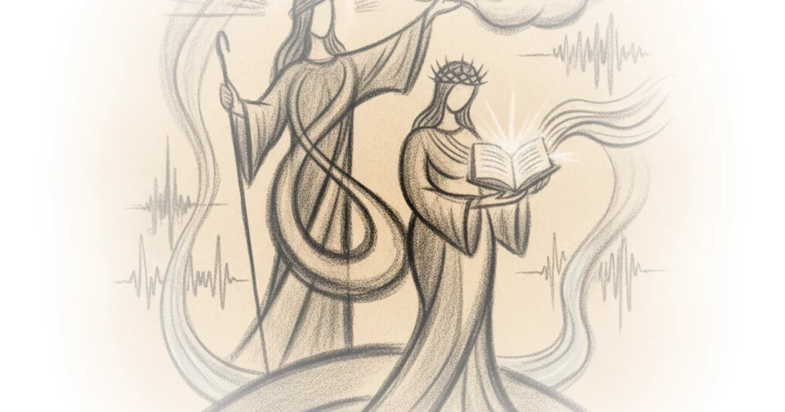

This piece from Wayfare challenges a modern assumption that has hardened into dogma: that spiritual authority in the early Restoration was exclusively tied to male priesthood offices. It argues that by fixating on labels like "Aaronic" or "Melchizedek," contemporary readers have missed the actual substance of Emma Smith's divine calling. The article doesn't just ask us to remember a historical figure; it demands we re-evaluate how we define power itself, suggesting that the original blueprint for the Church included a parallel ministry for women that was distinct from, yet equal in weight to, the male offices.
The Substance Over the Label
Wayfare begins by dismantling the idea that Emma Smith was merely a passive witness to her husband's prophetic work. Instead, the editors argue she was an active co-laborer from day one. "Joseph and Emma began the bringing forth of the Book of Mormon as ministerial coworkers," Wayfare reports, noting that the angel at Hill Cumorah required Emma's presence for Joseph to retrieve the golden plates on September 22, 1827. This is a crucial historical pivot; it reframes the translation not as a solitary male endeavor but as a joint venture where Emma served as the first scribe.

The piece then turns its analytical lens toward the July 1830 revelations, specifically Doctrine and Covenants 25, which addresses Emma as the "elect lady." The editors point out a glaring omission in modern theological debates: "Emma's revelation, Section 25, described her authority without categorizing it in priesthood terms or explaining exactly how it related to priesthood." This absence of terminology is not an oversight but a feature. By avoiding the specific labels that would later become rigid categories, the early Church preserved a vision of authority based on function rather than hierarchy.
"The seeming deficit in those early revelations may actually be an asset in gaining a clear view of Emma Smith's ministerial authority and the Restoration's larger vision for women's spiritual authority."
This framing is compelling because it sidesteps the modern culture war over ordination to focus on what was actually commanded. The article suggests that twenty-first-century conflicts often center on demands for women to hold male offices, "without reference to how women's authority manifested at the Church's origins." By ignoring the original context, critics and proponents alike miss the point: Emma was given a specific, ordained ministry that didn't need a 19th-century title to be valid.
The Parallel of Authority
The core of the argument rests on a textual comparison between the ordination of Oliver Cowdery and that of Emma Smith. Wayfare highlights a striking verbal echo in the early revelations. "Oliver Cowdery... the second elder of this church, and ordained under his hand," reads one passage. A mere weeks later, Emma is told: "And thou [Emma] shalt be ordained under his hand to expound scriptures, and to exhort the church."
The editors note that because Oliver's ordination language was part of the Church's constitution (the Articles and Covenants) accepted just months prior, this verbatim repetition would have been impossible for Joseph and Emma to miss. "This echo of Oliver's ordination in Emma's ordination offered her an assurance: She would receive divine authority as real as his." The piece argues that while their titles differed—Elder versus Elect Lady—the mechanism of their calling was identical.
Critics might note that the early Church structure was undeniably patriarchal, and that later developments explicitly restricted women from holding priesthood offices. However, Wayfare counters this by pointing out that even within those male offices, authority was not always sacramental. The Articles and Covenants established that teachers and deacons held "ministerial authority to teach, exhort, and expound" but were expressly forbidden from administering sacraments or baptizing.
"Divine authority was usually exercised ministerially and only occasionally sacramentally."
This distinction is vital for the article's thesis. If men could hold divine authority without performing ordinances, then Emma's lack of a sacramental role does not diminish her authority. The piece suggests that Emma's ministry paralleled that of a teacher: "As a teacher exercised divine ministerial authority in his calling, so also did Emma in hers." This reframes the conversation from what she couldn't do (perform ordinances) to what she was empowered to do (expound and exhort).
Restoring the Elect Lady
The final layer of the analysis connects Emma's title back to its New Testament roots. Wayfare explains that the phrase "elect lady" is drawn directly from 2 John, where the text opens with "The elder unto the elect lady." The editors argue this was a deliberate theological pairing. Joseph held the title of "First Elder," and Emma was given the title "Elect Lady," creating a "precise parallel to the male-female spiritual dyad introduced in the opening of 2 John."
This suggests a dual restoration: just as Joseph restored the office of the elder, Emma's calling restored the office of the elect lady. "The drawing of ministerial titles for both Joseph and Emma from the New Testament suggests not only a deliberate pairing of their ministerial roles but also a dual restoration." The article posits that modern confusion arises because we have lost sight of this original symmetry. We look for women in male offices, rather than recognizing the distinct female office that was restored alongside them.
"We don't have a name for what she was ordained to... But we do know specifics of what that power could do."
This admission—that the specific title is lost or ambiguous, yet the power is clear—is perhaps the most honest part of the piece. It invites readers to accept a mystery rather than force a modern bureaucratic box onto an ancient spiritual reality. The editors conclude that by focusing on the "form of godliness" (the labels) we have missed the "power thereof" (the actual ministry).
Bottom Line
Wayfare's argument is strongest when it shifts the focus from institutional labels to functional authority, effectively using early Church documents to show that Emma Smith held a divine mandate equal in substance, if different in form, to her male counterparts. The piece's biggest vulnerability lies in its reliance on the silence of later history; while it brilliantly reconstructs 1830, it cannot fully explain how this vision was narrowed over time without addressing the political and cultural pressures that followed. Readers should watch for how this historical re-examination influences current discussions on women's roles, not by demanding a return to old titles, but by reclaiming the lost concept of distinct, ordained female ministry.